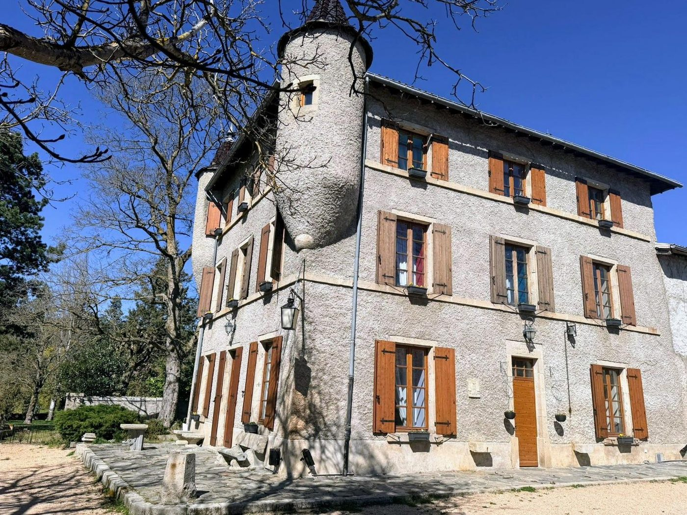
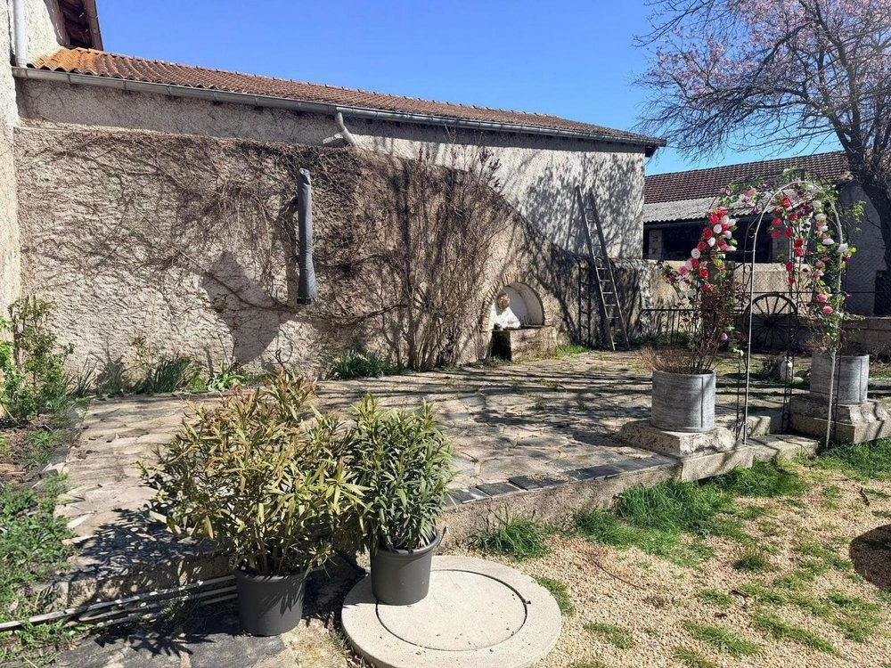
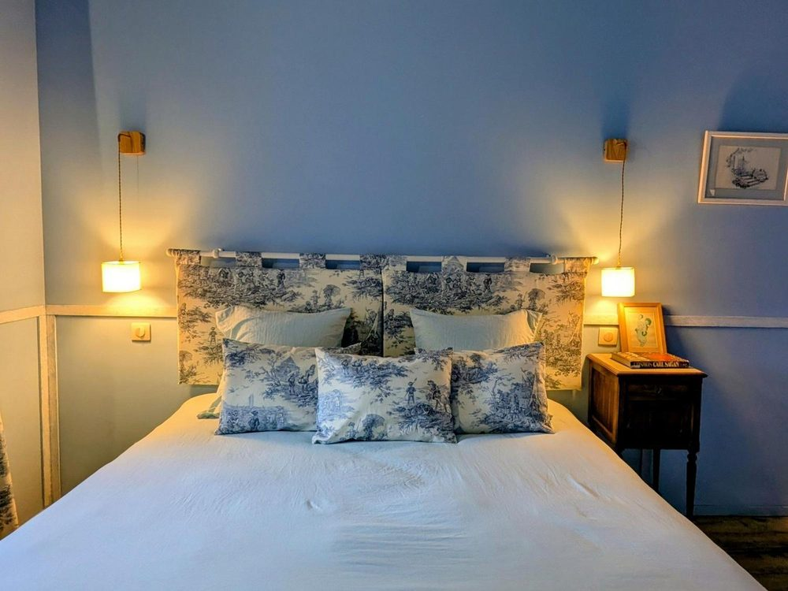
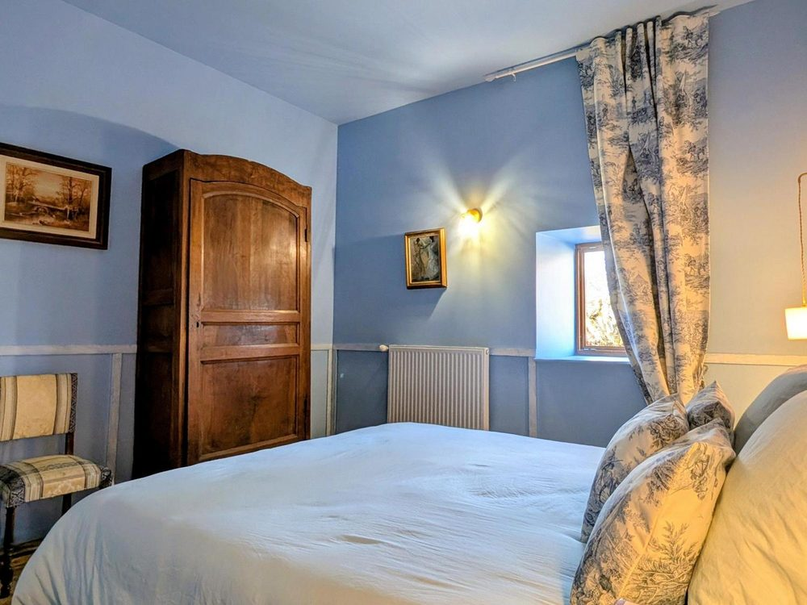
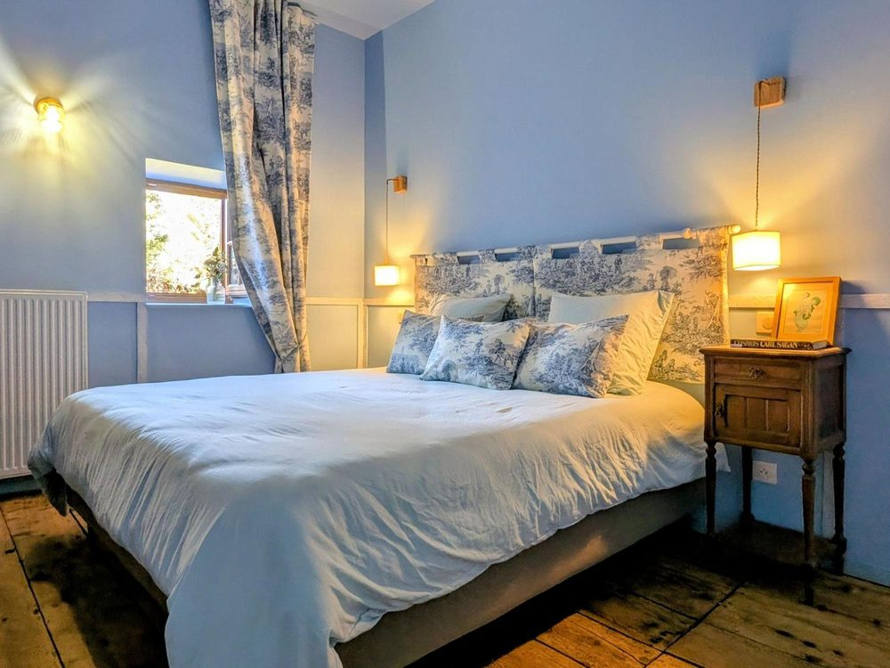
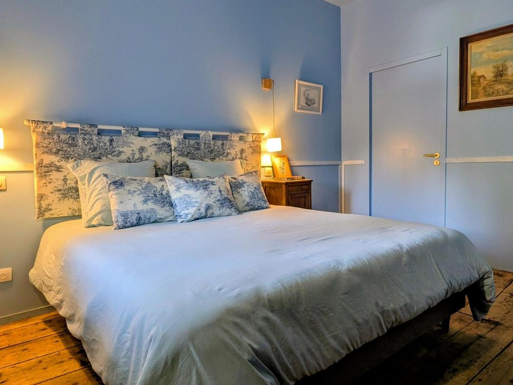
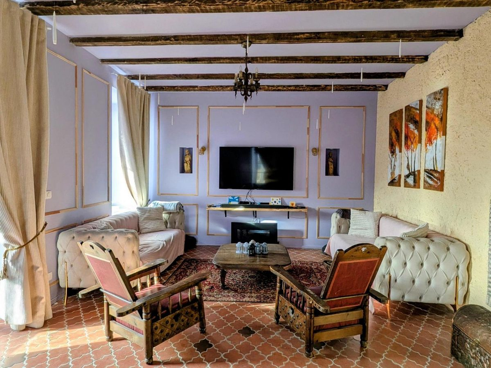
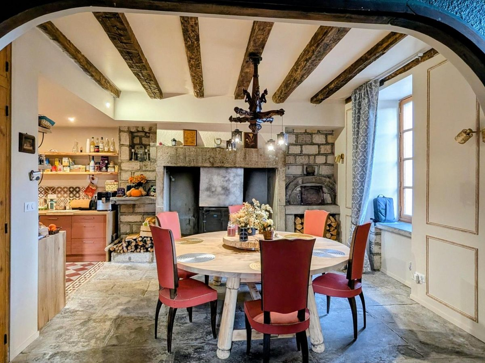
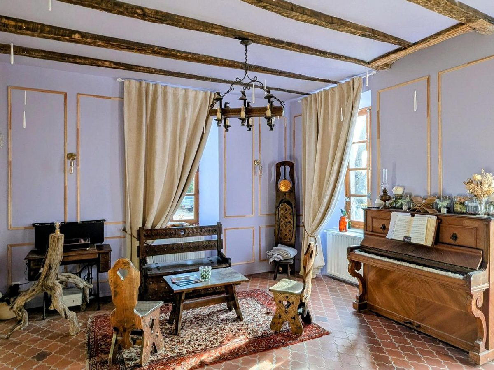
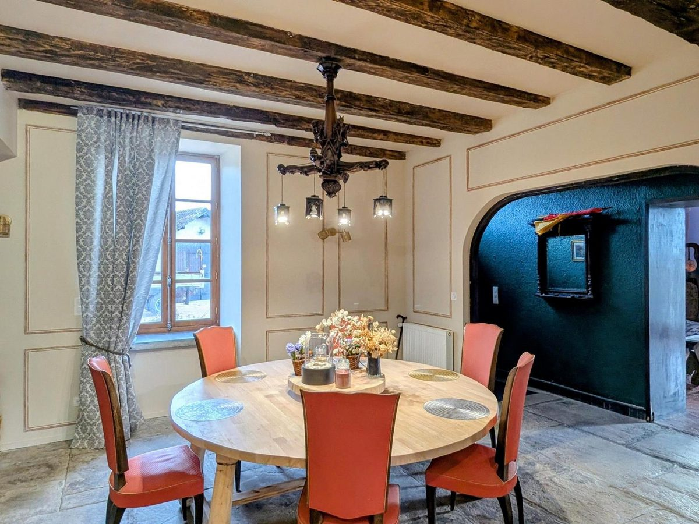

Beaulieu · Haute-Loire · Auvergne
Domaine d’Éden
Un château pour rêver,
un domaine pour se ressourcer.


01 L’esprit des lieux
Une parenthèse hors du temps
Au bout d’une allée digne d’un décor de cinéma, le Château les Tourelles dresse ses tours élancées au cœur d’un écrin de verdure. Ni château-musée, ni simple hébergement : une demeure vivante, chaleureuse, où l’on vient ralentir, se reconnecter à l’essentiel et savourer l’instant présent.
Ici, le patrimoine rencontre la nature. Les pierres racontent, le parc respire, et chaque fenêtre ouvre sur les paysages intacts de la Haute-Loire. Sur le tracé de la Via Fluvia, les voyageurs à vélo y trouvent une étape reposante — les autres, un refuge.
Grégory & Thomas Vos hôtes au Domaine d’Éden
Vos hôtes
Deux citadins d’origine parisienne qui ont choisi de changer de rythme et de vie. C’est en Auvergne que nous avons trouvé ce qui nous manquait : des paysages intacts, une atmosphère apaisante, et ce sentiment rare d’être enfin à notre place.Grégory & Thomas — accompagnés de leurs deux cockers et de leurs chats
accueil noté 9,8/10 par leurs voyageurs
02 L’hébergement
Cinq chambres, cinq univers
Chaque chambre raconte une histoire et invite à la rêverie, du sommet des tours aux boudoirs feutrés.
 Réserver
Réserver
Suite du Roi et de la Reine
La majestueuse
à partir de 90 € la nuit

RéserverAntichambre de la Nuit
L’énigmatique
à partir de 90 € la nuit

RéserverBoudoir des Rêves
Le délicat
à partir de 90 € la nuit

RéserverRefuge des Brumes
L’apaisant
à partir de 99 € la nuit

RéserverRepaire des Songes
Le mystérieux
à partir de 90 € la nuit

DécouvrirLes salons du château
À vivre, simplement
compris dans votre séjour

La table d’hôtes
Les saveurs locales,
à la table du château
Sur réservation 24 à 48 h avant votre arrivée, partagez une table d’hôtes préparée avec les produits de la région — 25 € par personne, dans la grande salle à manger ou sous les arbres du parc.
À venir en 2027 — un gîte pour 2 à 4 personnes
03 L’événementiel
Vos plus beaux jours, entre parc et tourelles
- i. Mariages intimistes & cérémonies dans le parc
- ii. Cousinades, anniversaires & retrouvailles de famille
- iii. Séminaires, stages & journées de cohésion
- iv. Privatisation du domaine — jusqu’à 30 personnes, avec ou sans hébergement
Pour accompagner vos réceptions, une formule traiteur simple et gourmande : planches apéritives et produits locaux à partager.
04 Les alentours
L’Auvergne, grandeur nature
à 17 km
Le Puy-en-Velay
Sa cathédrale, sa vieille ville et le départ mythique du chemin de Saint-Jacques-de-Compostelle.
au pas de la porte
La Via Fluvia à vélo
La voie verte entre Loire et Rhône passe devant le domaine — abri à vélos et étape reposante pour les cyclotouristes.
à 5 minutes
Gorges de la Loire & villages
Lavoûte-sur-Loire et son château, les bords de Loire sauvages, et les bonnes tables du pays — La Galoche à 3 minutes.
05 Galerie
Le domaine en images

Au sein du domaine
L’Espace Soreï
Un centre dédié à l’épanouissement personnel : médiation équine, sophrologie, ateliers et stages immersifs, au contact des chevaux et de la nature. L’Espace Soreï vous accueille sur son propre site.
06 Contact & accès
Venir au domaine
-
Adresse
2562 Avenue de Bazac — Adiac
43800 Beaulieu, Haute-Loire - Téléphone 06 65 32 92 61
- Email chateaulestourelles43@gmail.com
- Arrivées de 16 h à 20 h · départs de 9 h à 10 h
- Bon à savoir parking privé gratuit · animaux admis sur demande
Écrivez-nous
Votre parenthèse commence ici
Dites-nous vos dates et vos envies — nous vous répondons sous 24 heures.
Composer votre séjour